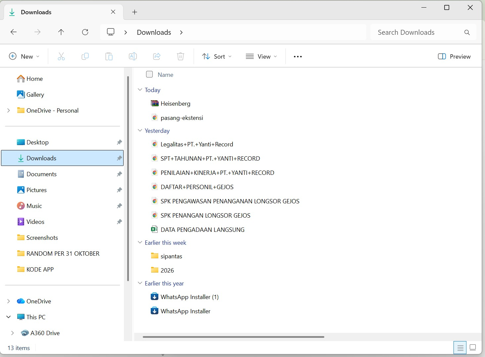
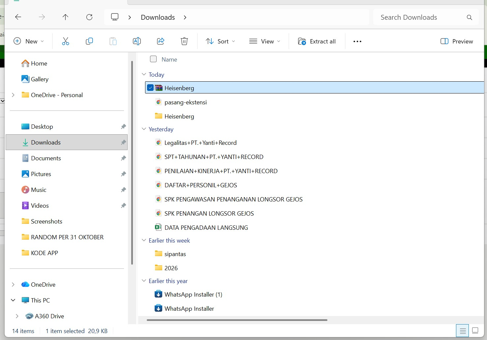
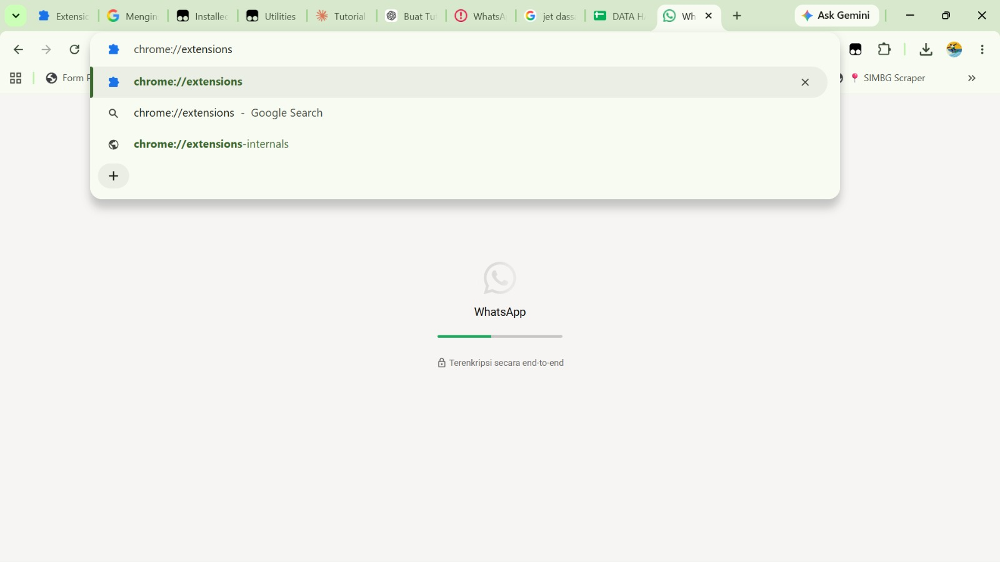
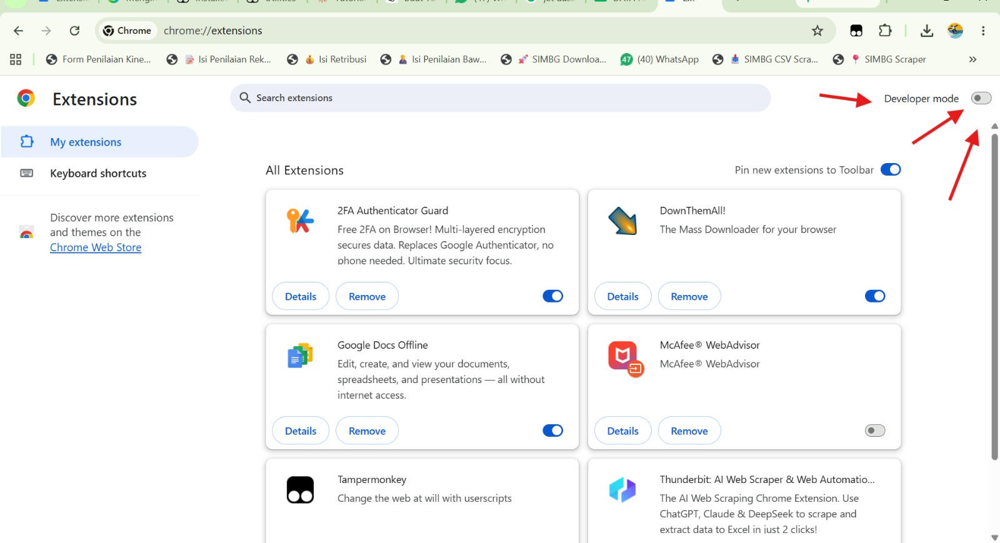
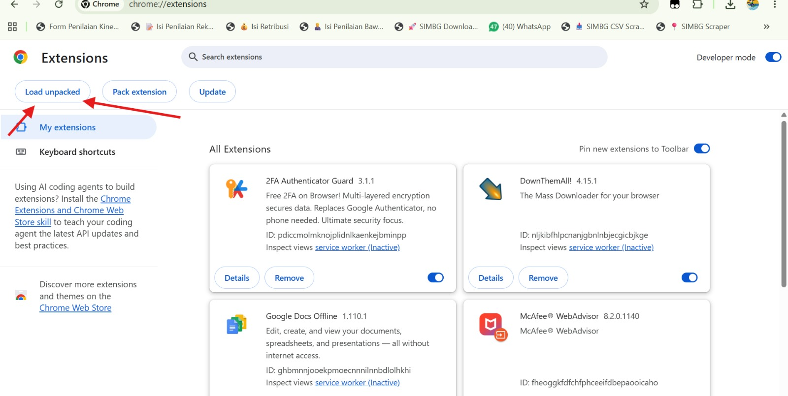
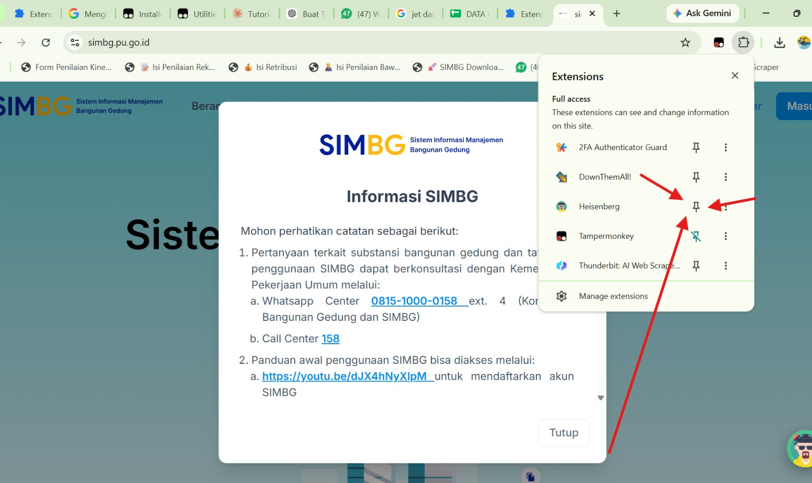

Unduh file ZIP ekstensi
File tersimpan di Google Drive. Jika muncul peringatan pemindaian virus, pilih Tetap download.
Langkah pemasangan di Chrome, Edge, atau Brave
Urutannya sama di ketiga browser. Perbedaannya hanya di alamat halaman ekstensi.
-
Simpan file ZIP
Setelah klik Unduh ZIP, file tersimpan di folder Downloads.

File ZIP di folder Downloads. -
Ekstrak ZIP menjadi folder
Klik kanan file ZIP, pilih Extract All… (Windows) lalu Extract. Hasilnya adalah sebuah folder.
Penting: jangan menjalankan ekstensi langsung dari dalam ZIP, dan jangan hapus atau pindahkan folder hasil ekstrak setelah dipasang. Ekstensi akan berhenti bekerja jika foldernya hilang.

Klik kanan, lalu Extract All. -
Buka halaman ekstensi browser
Buka tab baru, salin alamat sesuai browser Anda, tempel di kolom alamat, lalu tekan Enter.
Chrome:
chrome://extensionsEdge:
edge://extensionsBrave:
brave://extensionsAlamat ini tidak bisa diklik dari website, jadi harus disalin lalu ditempel sendiri.

Halaman Extensions di browser. -
Aktifkan Developer mode
Nyalakan saklar Developer mode. Letaknya di pojok kanan atas (Chrome, Brave) atau kiri bawah (Edge).

Saklar Developer mode harus menyala. -
Klik Load unpacked
Setelah Developer mode menyala, muncul tombol Load unpacked (di Edge juga bernama Muat tanpa paket). Klik tombol itu.

Tombol Load unpacked. -
Pilih folder hasil ekstrak
Pilih folder hasil ekstrak dari langkah 2, lalu klik Select Folder. Pilih folder yang di dalamnya langsung ada file
manifest.json. Kadang ada folder di dalam folder, jadi masuklah satu tingkat lagi jikamanifest.jsonbelum terlihat.Folder yang dipilih harus berisi manifest.json. -
Sematkan ekstensi ke toolbar
Ekstensi sudah muncul di daftar. Klik ikon puzzle di sebelah kolom alamat, lalu klik ikon pin di samping Heisenberg agar tombolnya selalu terlihat. Setelah itu buka website SIMBG dan ekstensi siap dipakai.

Ikon puzzle, lalu pin.